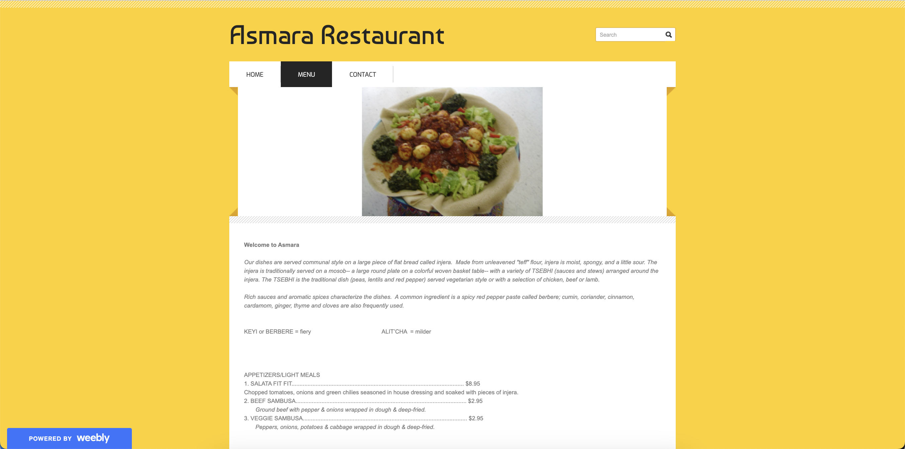

The goal of this project is to redesign a web page. Not just any web page, my mom's restaurant's web page! We will analyze and see if we identify any flaws in the current web page, create mockups for different screen sizes, and then build a responsive web page based on these prototypes.
I picked the menu page of my mom's small Eritrean restaurant, located in Portland, ME, because her and I have been looking for a solution to the visually unappealing website. This is the time to take action!
The menu is presented in a straightforward manner, listing the dishes along with descriptions. This however lacks clear sectioning for ease of accessing portions of the menu a customer may desire immediately, slowing down efficiency. In addition, on smaller screen sizes, the prices of certain dishes get moved to different lines from the item they belong this isn’t visually appealing to me or good responsive design.
The page, being very minimalist, contributes to high learnability. It’s easy to navigate the menu without previous instructions. It is also a consistent layout through the website nevermind the fact that we are focused on this one page.
Due to the minimalism, users who return to the site are likely able to remember how to navigate, especially with clear labels.
The conceptual model goes along with traditional restaurant menus, where the menu is scrollable. However, the lack of clear categorization and heading on the menu is not something you’d see on a paper menu. Improving this can enhance the conceptual model.
Wave detected a potential accessibility problem, saying there is no heading structure. I would agree with this because it was hard to differentiate within the menu. I think this is the main concern WAVE ended up detecting, while the others were points like ‘use of an unordered list’ and lack of aria labels, which are important concepts for those who need screen reading. I agree with these accessibility issues.